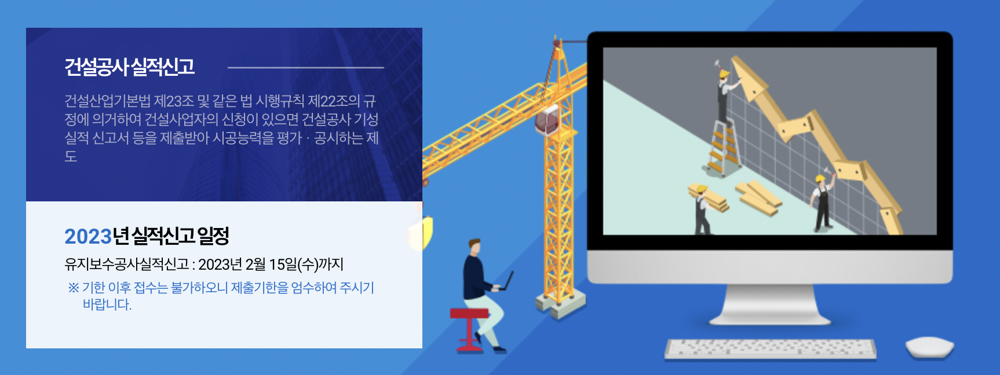

국토교통부
유지보수공사실적
신고시스템
CWS
바로가기
사용자 등록
인증서 등록
아이디찾기/비밀번호찾기
사용자 매뉴얼 다운로드
실적신고 문의처
시스템이용안내
1811.8778

공지사항
유지보수공사 실적 결과 안내
(전체공지) 유지보수공사실적...
협회이관 등 실적 처리 안내
유지보수공사실적 확정 일정...
건설공사기성실적증명서 양식
Q&A
FAQ
2022년 이후 공사부터 ...
국토교통부 유지보수공사실적...
유지보수공사의 정의 및 범...
유지보수공사실적 신고서는 ...
신설공사과 유지보수공사를 ...